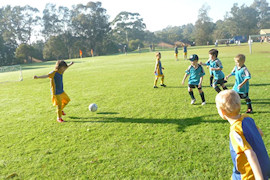
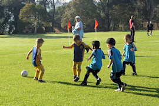
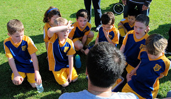
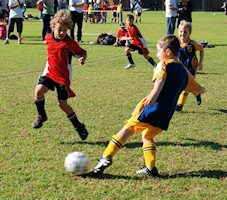
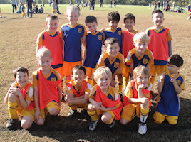
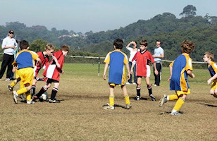
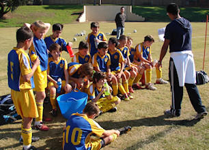
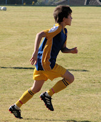
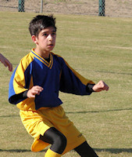

| Match Report - 21 May 2011 |
|
|
|
|
|
|
|
|
U6 Green
5 - 3
|
|
Another glorious sunny morning and the opportunity to play by the water was very
exciting for the U6 Green team. They were well matched today with the skills
shown from the All Saints HH A team who suprised us with the closest game this
season.
Blake showed his power behind the ball with 3 goals before half time and these
were matched by the opposition. After some refreshments and a talk from the coach
the team went back on the field to secure the game with another goal from Blake
and one for Elijah who showed that a week away on holidays was not going to slow
him down from his kicking accuracy.
The player of the week this week went to Will for his consistent speed, accuracy
and skill assist his team in attack and defence and always giving 110%. Well Done
to all the team, you continue your winning ways!
- Sarah Robson
|
|
|
|
U6 Purple A
7 - 5
|
|


North Ryde started into the sun in the first half. They showed very good team
work and passing skills.
Eli scored early with a very nice goal, taking the ball all the way from well
into our own half, and dribbling nicely.
Some very good team efforts, especially in defence and returning to cover the
opponents position, as well as a very good shot from Ethan kicked in from the
sideline towards goal, past everyone and made it all the way into goal.
Luke was player of the match today, with plenty of good running, staying up
with the play, and scoring an awesome goal as well.
In all there were 7 goals for North Ryde to 5 goals for the opposition, North
Ryde defending well in the second half to keep the lead after having led 5-2
in the first half.
- Richard Wolken
|
|
|
|
U6 Purple B
|
|
We had another great game today, with everyone trying hard. We tryed to keep up
our attacking from last week and managed to only let the opposition score twice.
With goals scored by Alexis(2), Reilly(1) and Madison(2), helped along by our
other terrific players James, Ethan, Georgia and Sean we were able to have our
second win of the season.
Player of the match trophy went to Reilly and the encouragement certificate
went to Sean.
- Meryl
|
|
|
|
U6 Red A
2 - 3
|
|
Coming of the back of last week’s great result, the U6 Red A team were roaring
and ready to give it their all on home ground turf against All Saints Hunters
Hill C. All Saints scored the first goal of the game. This was closely followed
up by a great goal from Hayden. The team were playing really well, passing the
ball to each other and showing improved defensive and attacking skills. Seconds
before the half time whistle, Oliver scored a fantastic goal which saw us going
into the half time break 2 - 1 up.
The team were pumped going into the second half after an awesome first half.
Shortly into the second half, All Saints scored to level the result and a few
minutes later All Saints scored again to bring the result to 3-2 in All Saints
favour which is where the score stayed for the remainder of the game. After a
few missed opportunities, the team did a really good job at keeping All Saints
at bay for the rest of the game.
After a close game, a lot of determination and energy and great coaching, the
boys showed improvement all round and are really coming together as a team.
Player of the match went to Hayden after scoring his first goal of the season
and playing a good all round game. Well done Hayden!
- Tony Dimovski
|
|
|
|
U6 White C
3 - 3
|
|
What an outstanding game against Putney Rangers, 3-3 draw and both teams played
a great game. Max, Ryan, Kurt, Jack, Dylan and Will all played a cracker game
in the sunshine and chased the ball well!
- Lisa Mach
|
|
|
|
U7 White A
2 - 4
|
|


North Ryde finally did meet their match today. It was very exciting and great
game to watch. Putney have obviously been drilling hard and had the skills to
prove it.
But North Ryde still played hard all the way to the final whistle. Cameron and
Hayden were our goal scorers today and they also both played fantastic in defence.
Loki was very unlucky not to have scored today with three beautiful attempts
that went over all the players heads and just missed the goal. Again all our
players are starting to show a more team orientated game with passing and
thinking more when they kick in to a free person. Every week we can see that
each player is improving.
Unfortunately it was another case of our kids being pushed about. Cameron who
was our player of the match got a finger to the eye very early on and along
with other players was receiving a few too many pushes. But to give him his
credit he played on and got his own by scoring a goal and just playing harder
(not rougher). In fact all of North Ryde picked up and played so much better
in the second half, only conceding one goal. Remember kids, pick yourselves up
and play on because the best revenge is showing them that you don't need to
play dirty to win the game. Everyone enjoyed themselves and that is a win in
our eyes!
- Kirrilee
|
|
|
|
U7 White C
3 - 3
|
|

We had an exciting game this morning against one of our own North Ryde club
mates (White B). It was a hard-fought match, with both teams getting good run
of the ball.
At the end of the day, we ended up with a 3-all draw, a tribute to everyone’s
hard work both during the game and at training. Well done team!
- Carmel Crook
|
|
|
|
U8 Brown
1 - 1
|
|

What an exciting game it was at Magdala. First surprise was the choice of parking
spots, the team arrived with plenty of time for a warm up and some fun before the
match. Thanks to John for coaching and umpiring and thanks to Mark for coaching the
Goalies, both parents and players exhibiting great teamwork - Well Done everyone.
The game started with both teams evenly matched, passing and dribbling the ball
are improving as well as positional play between attack and defence. Sam broke
through the Putney Ranges goal before half time and the crowd erupted in due
course. Luca and Declan continued with their consistent attacking and defending.
Issak made several saves in the goal during the first half and showed his ability
to make some excellent tackles in defence and clear the ball up to the forwards.
The second half brought on some new found skills from the Putney rangers team,
the foot work surprised everyone at first, although once the NRS team released
that they were standing still, they started to make some awesome tackles. Special
mention goes to Liam who was tackling every ball within his reach, definitely
keeping the defence strong, The second half saw an equaliser early from the
opposition and Brooklyn was amazing in the goal he must of saved a dozen shots
flying from side to side with such determination and focus. This week was a great
game and the NRS team should be very proud of the result they worked hard from
start to finish.
Player of the week was awarded to Declan for his consistency in attack and
defence, his excellent tackling, dribbling and passing skills with accuracy.
Well Done!
- Sarah Robson
|
|
|
|
U8 Yellow
3 - 2
|
|
A glorious sunny day greets the undefeated U8 Yellow team from North Ryde. Pre
match warm ups get underway with the opponents, Redfield, already looking a
formidable side. Practicing shots at goal from the halfway line generates a
pause for concern and what awaits us when play actually starts. Some sledging
by the Redfield players, whilst most un sportsman like suggests an air of
cockiness and the possibility that this team also remains undefeated.
Play commences, with North Ryde running East to West. Unlike previous games this
season, no one team was dominant, forcing North Ryde to be a little more defensive
than otherwise anticipated. The pace of the game was frantic. Redfield appeared
to get the upper hand, if only for a brief moment and delivered the first goal of
the match at about 3 minutes into the game. Shortly after, North Ryde create a run
against an attacking Redfield and are soon scurring down the northern side line
into opponent territory. The run included many short and long passes, between,
well nearly all North Ryde players - absolute brilliance. Unfortunately the run
finished as a result of some very unfair play by the opposing team and ultimately
a free kick to the home team. North Ryde, despite the difficulties were not going
to give up. Play continues, again down the northern side line, a few more passes
and Fletcher puts in the equaliser. Ten minutes to half time, North Ryde and
Redfield FC are locked in at 1 goal each. A few minutes later Redfield FC increase
the lead by another goal. Three minutes out from half time and Patrick sets Damien
up with the equaliser. Half time arrives, scores are locked in at 2 goals each and
a well earned break is taken. The players are clearly exhausted, but not spent.
Some strategies are discussed and plenty of encouragement given to the team for
doing a fantastic job against a highly skilled team.
Revved up and with a few position changes, the team continue to show their true
sportsman like behaviour throughout the entire second half. Again, as in the first
half, both teams played to the fullest extent possible. In fact, it was clear that
North Ryde were playing well beyond their skill levels very successfully, using
tactics that were recently developed, only one or two training sessions prior to
the match. Initially, the Redfield FC attack was relentless, but dissipated,
although briefly, a few minutes into the second half. Ten minutes to go, and
scores are locked at two goals each. At this point, Redfield FC, get a resurgence.
Running east to west and after some well executed manoeuvres, North Ryde are again
on the defensive. More tackles by North Ryde, along with some brilliant
positioning by Harry, Kate, and Jacob eventually creates an attacking opportunity.
Another short pass from Jacob to Anuj gets the ball well into the Redfield FC
half. Strategically positioned, Damien receives the ball and scores an absolute
cracker of a goal with only three minutes to go.
In short, North Ryde U8 Yellow were, and continue to be a great team. It is clear
that this game has been the most challenging so far in terms of both the skills
required and discipline to maintain their collective composure against the obvious
unsporting behaviour displayed by the Redield FC. I think the team is to be
commended.
Final Score, 3 to 2 in favour of North Ryde.
Goal Scorers:
1. Fletcher Gusse, 10 minutes into the game;
2. Damien Granet scores 3 minutes out from half time, after a brilliant pass from Patrick Milne;
3. Damien Granet, 5 minutes from full time.
Player of the Match - Kate Kennedy
- David Watt
|
|
|
|
U9 Division 3
1 - 1
|
|
Bright and sunny mid-morning game saw us against Roselea FC out at West Epping
Park. Couple of last minute scrambles getting people there meant we actually had
to start the game short but it was on for a minute or two. Everyone was working
hard and positional play has again improved.
There were chances from both sides and both sides seemed to be playing quite
similar field positioning and strategies. Neither side could put one into the
back of the net though. Darcy made some good saves in goal and at half time it
was nil all and still quite tense.
A couple of position changes, particularly up front and we hoped to invigorate
the game and get some goals. It took us the first half of the second half to
really start getting some strong threatening plays together. This paid off
twelve and a half minutes in when Darcy finally got one to stick, albeit almost
getting the wrong bounce off the cross bar. This seemed to help the boys and they
managed to look threatening from that point. An unplayed advantage by the ref
unfortunately brought us back from a very promising break with an overlap in
numbers for our free kick - allowing the other team to get some numbers back.
We held on to our lead well for almost the entire game until in the last minute
a ball that lingered up our end too long before we could clear it turned into a
quick shot that Kaiden couldn't quite reach in goals. This levelled the scores
and disappointed the boys but these things happen.
The team played well together and Nathaniel was awarded the certificate for never
ending energy and commitment for the whole game. Final score 1 all draw.
If we keep up our momentum we are sure to take some more wins in the upcoming games.
- Darren Mason (Manager)
|
|
|
|
U11 Division 1
3 - 1
|
|

The North Epping Oval football ground was a far sight different from the same
ground a year ago, when nearly every inch of the field was carpeted with a muddy
sludge that saw players slip-sliding their way through the match. Not this year
though. The field was in immaculate condition with a level turf, dry trimmed
grass and netted box-goals to die for. This was premier league stuff!
The North Epping Rangers wasted no time in attacking our goal space as soon as
the whistle blew and we spent the first few minutes scrambling in defence and
protecting our goals until the initial frenzy subsided. Panic over, our North
Ryde boys played with their heads again and started stringing together a series
of passing movements that saw them cross the border and put the Rangers goals
on their radar. The midfield were passing a lot of quality ball through to the
forwards and it wasn't long before Oscar P was able to put the final touch
on a racing goal-bound ball to give North Ryde the lead.


The remainder of the first half followed a similar pattern. The defence held the
Rangers attack at bay and produced many turn-arounds that triggered the start of
a new rally at the opposition goals, relieved by the midfielders who drove the
attack forward at an impressive pace and supplied the strikers with
defence-splitting balls that kept the first half ripe with opportunities. Eli and
Oscar P pounced on two such chances when all they need to finish the job was a
calm head, speed, and just the keeper to beat. Which they did, in similar and
consecutive fashion, to give North Ryde a three goal cushion going into the break.
The Rangers certainly did not give up the fight though and came back at North
Ryde with a vengeance in the second half. The speed with which they turned the
ball around was impressive and we had to draw on all our reserves to halt their
charge on our goals. The substitutions we applied in the second half also had
the unfortunate effect of disrupting established partnerships and the Rangers
were quick to exploit any holes that resulted in our formation. One had to give
credit to the Rangers for their relentless effort in pursuit of a first goal,
and they did finally pull one back when our defence had been stretched a bridge
too far and were unable to suppress their lively forwards.
The game ended in a 3 - 1 win to North Ryde, and they will consider it to have
been a good win given the quality of their opposition. Everyone had dug deep and
put in a top-class effort to win the match, but I thought that Lennon, Dion,
Shannon and Jett, in particular, with their sheer effort and non-stop work-rate,
had all played a monumental game today that gave our team the winning advantage.
Well done team!
- Mark Howard
|
|
|
|
U11 Division 3
1 - 2
|
|
The game started at a rapid pace. Zac made a zig-zagging run down the field. He
had a shot which looked as if it would go just wide, but Ben was there to tap
it into the back of the net for his first goal of the season. Maybe the boys
thought they were in for an easy day, because they seemed to step back from the
battle. Pennant Hills, however, had other ideas and put pressure on our defence.
One attack wasn’t cleared properly and Pennant Hills scored the equaliser.
North Ryde struggled for the rest of the first half. We had a couple of chances,
but Pennant Hills made several breaks which, luckily for us, just missed at the
end. Anthony made a couple of good tackles in midfield and Ahmad made some
desperate tackles.
The start of the second half was a disaster. The Pennant Hills players burst
down the field and caught North Ryde napping to score an easy goal. There was
little to cheer for the rest of the game. Salim and Sam tried hard in defence.
Matt tried to cover the entire field but, too often, North Ryde players stood
back, waiting for the game to come to them instead of going looking for the
ball. Hamish, in goal, bravely came out a few times to stop an attack. At the
last minute, Ben put up a high ball which sailed towards the goal. Just as it
looked like it would drop into the goal, it hit the crossbar and bounced over.
Hopefully luck will come our way next week.
- Martin Borri
|
|
|
|
U11 Division 5
3 - 0
|
|
It was an early start but that didn’t dampen the enthusiasm for the match. After
a slow start our training routines started to become evident during the match.
The defence was solid causing the opposition many problems. The midfield did a
great job supplying the ball up to the front line where the guys scored goals.
A special mention also to the great goal keeping skills shown. Well done both
Tom and Bosco. It is a pleasure to watch the team coming together week by week.
Well-done boys be proud of yourselves, you deserve it.
- Brian Smith
|
|
|
|
U15 Division 2
3 - 0
|
|
For the fifth game of the year, with a very sunny day and an 11:15am start, the
boys played at LH Waud (Meadowbank) against West Ryde Rovers, who were third in
the GHFA competition.
We started strongly and soon Cameron, using a cork screw kick, kicked a goal to
put us ahead at 1-0. The West Ryde Rovers were kicking the ball around a bit and
the game was uneventful for the first half. Hayden was in goals and was doing an
excellent job as goal keeper. Chris and Alex were solid in defence as usual.
Mitch was keen and playing well and skilfully passing the ball up to Kyle, Manav
was up front and enjoying being in the attack. The second half, we were doing
more one-two’s and the North Ryde team were making some nice attacks on both
wings, Lewis kicked one up to the goal box and Daniel scored, 2-0! Ben was
playing well and made some strong headers and jab kicks that seemed to always
foul the attackers play. Tom made an excellent run up the side much to the
excitement of the mums. Paul, making a foxy move, moved Luke up the front from
the rear and he scored to open his account for the season. The final score was 3-0!
The player of the match was Hayden Rolls and the ‘cupcake’ trophy was presented
by Belinda Quan. I would like to thank all the parents who came to support our
team... you do make a loud difference!
- Joe Rosenfels
|
|
|
|
All Age Division 17
0 - 1
|
|
Round 7 saw North Ryde up against a well drilled Gladesville Sharks outfit. With
a solid line-up ready before kick off North Ryde had reason to be optimistic but
Gladesville were getting the better of the early exchanges keeping the ball well
and exploiting the space that was made available to them, while North Ryde were
having trouble getting and maintaining possession to build up play. Slowly North
Ryde started to get into the game by putting more bodies in and around the ball,
and with it the game tightened up. As such it was a body blow when a well worked
Sharks move created the first goal with an overlapping run down the right flank
getting in behind the North Ryde defence, and a well driven shot finding the
corner of the net. The first half also saw the second major injury to a North
Ryde player this season with a clumsy tackle by a Sharks player resulting with
a shoulder injury to Christian Faure-brac, later diagnosed at the hospital as an
AC disruption. The arm-wrestle continued but at half time it was 1-0 to the Sharks.
To get back into the game North Ryde were looking to get back to what they did
well in round 6 which was competing harder for those 50-50 balls but a good
possession game from Gladesville made this difficult. Tim Brady and Ross Anderson
up front were causing some issues aided by the midfield but most of these
opportunities were through quick ball transition rather than measured build up.
About the hour mark the Sharks had two chances that should have secured the
points with a ball put over from 8 yards with just the keeper to beat and,
shortly after, a free header also going over; apart from few longer range efforts
these were the Sharks last decent attempts to threaten the North Ryde goal. North
Ryde looked to steal the goal that would have tied the match but despite raising
their temp for periods a clear cut chance failed to appear and a header wide and
a few duffed shots were not enough.
Overall however it was a decent performance against a strong team. One gets the
feeling that there is not much between the last two North Ryde performances and
a win but time their challenge is to find that extra 5 or so percent that will
take them to it.Round 8 vs West Pennant Hills Cherrybrook provides that next
opportunity.
- Simon
|
|